JERUSALÉM CELESTE
CASTIGO DA BABILÔNIA - A GRANDE PROSTITUTA
O Apóstolo João continua
descrevendo: “Um dos “Anjos das Sete Taças”veio me dizer": “Vem! Vou te 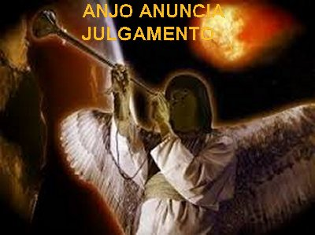
“Ele me transportou então, em espírito, ao deserto (Habitação de animais impuros), onde vi uma mulher sentada sobre uma Besta escarlate cheia de títulos blasfemos, com sete cabeças e dez chifres. (As sete cabeças são as sete colinas de Roma, e os dez chifres são os reis vassalos, que se revoltou contra o jugo do Império. A Besta representa um Imperador, sem dúvida Nero, que segundo uma crença popular, recobraria a vida e o poder antes da vinda do Cordeiro). A mulher estava vestida com púrpura e escarlate, adornada de ouro, pedras preciosas e pérolas; e tinha na mão um cálice de ouro cheio de abominações: são as impurezas da sua prostituição. Sobre a sua fonte estava escrito um nome, um mistério”: “Babilônia, a Grande, a mãe das prostitutas e das abominações da Terra”. “Vi então que a mulher estava embriagada com o sangue dos Santos e com o sangue das Testemunhas de JESUS; (As perseguições romanas implicam frequentemente na idolatria e no assassinato). E vendo-a, fiquei profundamente admirado. O Anjo, porém, me disse”: “Porque estás admirado? Eu te explicarei o mistério da mulher e da Besta com sete cabeças e dez chifres que a carrega”.
O SIMBOLISMO DA BESTA E DA PROSTITUTA
(No simbolismo da Besta pode-se distinguir dois sentidos diferentes. A mulher que a cavalga se julga poderosa, mas corre para a perdição).
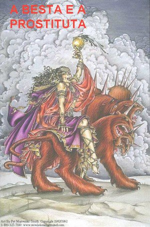
“São também Sete Reis” (Sete Imperadores Romanos. Sete é um número simbólico de totalidade: João não se pronuncia sobre o número e a certa cronologia dos Imperadores), “dos quais cinco já caíram, um existe e o outro ainda não veio, mas quando vier deverá permanecer por pouco tempo. A Besta existia e não existe mais é ela própria o Oitavo (o Oitavo Imperador) e também um dos Sete (dos mais terríveis e cruéis), mas caminha para a perdição. Os dez chifres que viste são dez Reis (Reis arranjados por interesse) que ainda não receberam um reino. Estes, porém, receberão autoridade como Reis por uma hora apenas, juntamente com a Besta. Tais Reis têm um só desígnio: entregar seu poder e autoridade à Besta. Farão guerra contra o Cordeiro, mas o Cordeiro os vencerá, porque ELE é o SENHOR dos senhores, e REI dos reis, e com ELE vencerão também os chamados, os escolhidos, os fiéis.”
“E continuou”: “As águas que viste onde a Prostituta está sentada são povos e multidões, nações e línguas. Os dez chifres que viste (Que são os Reis vassalos) e a Besta, contudo, odiarão a Prostituta (o Império Romano) e a despojarão, deixando-a nua (e a destruirão) ; comerão suas carnes (será saqueada) e a entregarão às chamas, pois DEUS lhes colocou no coração realizar o seu desígnio: entregar sua realeza à Besta, até que as palavras de DEUS estejam cumpridas. (E termina o Capítulo com uma ironia do Anjo) A mulher que viste, enfim, é a Grande Cidade que está reinando sobre os Reis da Terra.” (Final do 17º Capítulo)
UM ANJO ANUNCIA A QUEDA DE BABILÔNIA
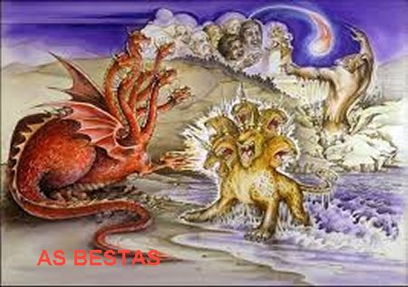
(O castigo anunciado agora é iminente. Ele se realizará depois que os fiéis estiverem separados dos pecadores)
“Depois disto vi outro Anjo descendo do Céu; tinha um grande poder e a Terra ficou iluminada com a sua glória. Ele então gritou com voz poderosa”:
“Caiu! Caiu Babilônia, a Grande (Cidade)! Tornou-se moradia de demônios, abrigo de todo tipo de espíritos impuros, abrigo de todo tipo de aves impuras e repelentes, porque ela embriagou as nações com o vinho do furor da sua prostituição (de uma abominável idolatria); com ela se prostituíram os Reis da Terra, e os mercadores da Terra se enriqueceram graças ao seu luxo desenfreado.”
O POVO DE DEUS DEVE FUGIR
“Ouvi então, outra Voz do Céu que dizia”:
“Saí dela, ó Meu povo, para que não sejais cúmplices dos seus pecados e atingidos pelas suas pragas; (Aqui, o sentido da fuga não consiste em abandonar o lugar, mas uma atitude interior definida, contrária a idolatria, ao luxo e a permissividade, e totalmente dirigida a DEUS) porque seus pecados se amontoaram até o Céu, e DEUS se lembrou das suas iniquidades. Devolvei-lhe o mesmo que ela pagou, pagai-lhe o dobro, conforme suas obras; no cálice em que ela misturou, misturai para ela o dobro. O tanto que ela se concedia em glória e luxo, lhe devolvei em tormento e luto, porque, em seu coração, ela dizia: Estou sentada como rainha, não sou viúva e nunca experimentarei luto... Por isso as suas pragas virão num único dia: morte, luto e fome, e pelo fogo será devorada, porque o SENHOR DEUS que a julgou é Forte.” (Essas recomendações não podem ser interpretadas como um convite a vingança, DEUS não procede assim. Trata-se de anúncios, em consequência dos desacertos e das maldades praticadas, que vão originar uma justiça estrita para punir os erros cometidos. Afinal os erros cometidos não podem ficar impunes).
LAMENTAÇÕES SOBRE BABILÔNIA
(Tríplice lamentação dos reis da Terra, dos mercadores da Terra, e dos navegadores)(Aqui aparecem alguns efeitos da Grande Tribulação).
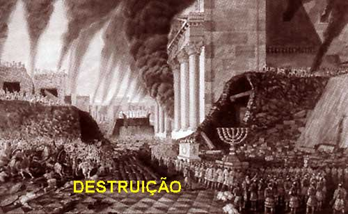
“Ai, ai, ó grande cidade, ó Babilônia, cidade poderosa. Uma hora apenas bastou para o teu julgamento!”
“Os mercadores da Terra também choram e se enlutam por sua causa, porque ninguém mais compra suas mercadorias: carregamentos de ouro e de prata, pedras preciosas e pérolas, linho e púrpura, seda e escarlate, todo o tipo de madeira perfumada, de objetos de marfim, de pedra preciosa, de cobre, de ferro, de mármore, cinamomo e essência, perfumes, mirra e incenso; vinho e óleo, flor de farinha e trigo, bois e ovelhas, cavalos e carros, escravos e vidas humanas”...
“Os frutos pelos quais tua alma anelava afastaram-se para longe de ti; tudo o que é opulência e esplendor está perdido para ti, e nunca, nunca mais será encontrado”!
“Os mercadores destes produtos, que se enriqueceram graças a ela, postar-se-ão à distância, por medo do seu tormento; e chorando e enlutando-se dirão”:
“Ai, ai, ó grande cidade, vestias de linho puro, púrpura e escarlate, e te adornavas com ouro, pedras preciosas e pérolas: numa só hora tanta riqueza foi reduzida a nada!”
“Todos os pilotos e navegadores, marinheiros e quantos trabalham no mar se mantiveram à distância, e, vendo à fumaça do seu incêndio, gritavam”:“Quem era semelhante à grande cidade?” “E atirando cinzas sobre a cabeça, chorando e se enlutando, gritavam”:
“Ai, ai, ó grande cidade, com tua opulência se enriqueceram todos os que tinham navio no mar: numa hora apenas foi arruinada!
(Em contraste com estes lamentos, as consciências de muitos daqueles pesaram, e reconheceram o direito do Céu em exultar, com a execução da Justiça Divina, dizendo):
“Exultai por sua causa, ó Céu, e vós, Santos, Apóstolos e Profetas, pois, julgando-a, DEUS vos fez justiça”.
“Nisto, um Anjo poderoso levantou uma pedra, como uma grande mó, e a atirou ao mar, dizendo”:
“Com tal ímpeto será lançada Babilônia, a grande cidade, e nunca mais será encontrada; (Babilônia será destruída por causa de sua idolatria e por suas perseguições contra os cristãos) e o canto de harpistas e músicos, de flautistas e tocadores de trombeta, em ti não mais se ouvirá; e nenhum artífice de qualquer arte jamais em ti se encontrará; e o canto do moinho em ti não mais se ouvirá; e a luz da lâmpada nunca mais em ti brilhará; e a voz do esposo e da esposa em ti não mais se ouvirá, porque os teus mercadores eram os magnatas da Terra, e com tua magia as nações todas foram seduzidas; e nela foi encontrado sangue de Profetas e Santos, e de todos os que foram imolados sobre a Terra.” (Desde os primeiros séculos depois de CRISTO, os bárbaros invadiram, saquearam e devastaram o Império Romano. Adentravam pelas fronteiras, matando, destruindo e se apossando de todos os bens, obrigando o povo abandonar as cidades e a se refugiarem no campo. Roma foi totalmente saqueada e destruída em 476 d.C.). (Final do 18º Capítulo)
CANTOS DE TRIUNFO NO CÉU
(A grandeza de DEUS, sua infinita misericórdia que salva os corações arrependidos, se revelam também nos Seus Atos de Justiça. Por isso, ELE deve ser louvado e adorado, mesmo quando exercita a Sua Divina Justiça. O primeiro canto vem do Céu; é seguido por um segundo, ao qual se associam os Santos de toda a Igreja, convidada para as núpcias do Cordeiro. É a manifestação da alegria dos fiéis, pela vitória sobre o maligno).
“Aleluia!
A salvação, a glória e o poder do nosso DEUS, porque Seus julgamentos são
verdadeiros e 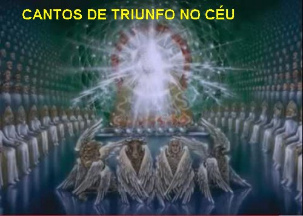
“E acrescentaram”:
“Aleluia! Dela sobe a fumaça pelos séculos dos séculos!”
“Os vinte e quatro Anciãos e os Quatro Animais (Quatro Anjos do SENHOR) se prostraram então diante de DEUS que está sentado no trono, dizendo”:
“Amém. Aleluia!”
“Nisto, saiu do trono uma voz, convidando”:
“Dái louvores ao nosso DEUS, vós todos, seus servos, e vós que o temeis, os pequenos e os grandes!”
“Ouvi depois como que o rumor de uma grande multidão, semelhante ao fragor de águas torrenciais e ao ribombar de fortes trovões, aclamando”:
“Aleluia! Porque o SENHOR, o DEUS Todo-Poderoso passou a reinar! Alegremo-nos e exultemos, demos glória a DEUS, porque chegou o tempo das núpcias do Cordeiro (As núpcias do Cordeiro simbolizam o estabelecimento do Reino Celeste), e sua esposa já está pronta: concederam-lhe vestir-se com linho puro, resplandecente” – (pois o linho representa a conduta justa dos Santos).
“A seguir, disse-me”: “Escreve: felizes aqueles que foram convidados para o banquete das núpcias do Cordeiro.” “E acrescentou”:“Estas são as verdadeiras palavras de DEUS.”( Então disse João:) “Caí então a seus pés para adorá-lo, mas ele me impediu”: “Não! Não o faças! Sou servo como tu e como teus irmãos que têm o Testemunho de JESUS. É a DEUS que deves adorar!” “Com efeito, o espírito da profecia é o testemunho de JESUS”.
(A alegria e a confiança tomaram conta de João ao ver anunciada a hora da vitória da Igreja, mesmo na Terra, quando poderão ser realizadas todas as promessas. E a felicidade dele foi tão grande, que emocionado ficou fora de si, diante do “Ser misterioso”, que lhe anunciava coisas tão belas, chegando a imaginar que estivesse diante de CRISTO ou do próprio DEUS, e por isso quis se prostrar diante dele para adorá-lo).
O EXTERMÍNIO DAS NAÇÕES PAGÃS
PRIMEIRO COMBATE ESCATOLÓGICO
(Estamos no Fim dos Tempos. Depois da queda de Babilônia, profetizada e realizada, CRISTO fiel cumpre o Dia de JAVÉ exterminando os inimigos da Igreja. Na Sua Vinda Gloriosa, CRISTO vem para julgar os ímpios e salvar os fiéis. É a Parusia).
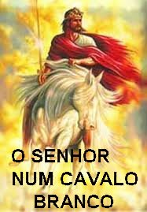
“Vi depois um Anjo que, de pé no Sol, gritou em alta voz a todas as aves que voavam no meio do Céu”:“Vinde, reuni-vos para o grande banquete de DEUS, para comer carnes de reis, carnes de capitães, carnes de poderosos, carnes de cavalo e cavaleiros, carnes de todos os homens, livres e escravos, pequenos e grandes.” (A derrota será tão grande que não sobrará ninguém para enterrar os mortos).
“Vi então a Besta reunida com os reis da Terra e seus exércitos para guerrear contra o Cavaleiro e Seu Exército. A Besta, porém, foi capturada juntamente com o Falso Profeta o qual, a serviço da Besta, tinha realizado sinais com que seduzira os que haviam recebido a marca da Besta e adorado a sua imagem: ambos foram lançados vivos no lago do fogo, que arde com enxofre. Os outros foram mortos pela espada que saía da boca do Cavaleiro. E as aves todas se fartaram com as suas carnes”.
(Estamos diante do DIA DO SENHOR com a manifestação da SUA Justiça. Aqui não existe campo para a misericórdia. CRISTO é apresentado não tanto como SALVADOR, mas como JUIZ). (Final do 19º Capítulo)
O REINO DE MIL ANOS
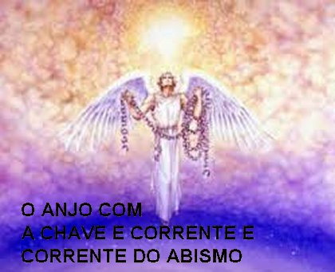
“Vi então um Anjo descer do Céu, trazendo na mão a chave do Abismo e uma grande corrente. Ele agarrou o Dragão, a antiga Serpente – que é o Diabo, Satanás -, acorrentou-o por mil anos” (O castigo efetua-se em duas fases: primeiro Satanás é reduzido à impotência durante mil anos, nos quais reinarão os mártires. Depois será solto por pouco tempo, mas ele se revoltará de novo antes da destruição definitiva de suas forças),“e o atirou dentro do Abismo, fechando e lacrando-o com um selo para que não seduzisse mais as nações até que os mil anos estivessem terminados. Depois disso ele deverá ser solto por pouco tempo”. (O prazo de mil anos que Satanás ficará algemado para não fazer mal a humanidade, não deve ser considerado como exato, o prazo poderá ser maior ou menor, segundo a Vontade do SENHOR).
O versículo nº 1 do 20º Capítulo, a seguir, apresentou um engano durante as etapas de impressão e retoques na redação, conforme afirma a Bíblia de Jerusalém (Novo Testamento), Edições Paulinas, pagina 696, indicação (p). Mostramos a seguir em vermelho, o texto como está, e logo abaixo, em azul, o texto devidamente corrigido - “Vi então tronos, e aos que neles se assentaram foi dado poder de julgar. Vi também as vidas daqueles que foram decapitados por causa do Testemunho de JESUS e da Palavra de DEUS”...
“Vi então tronos, e aos que nele se assentaram: eram as almas dos que foram decapitados, por causa do Testemunho de JESUS e da Palavra de DEUS, e dos que não tinham adorado a Besta, nem sua imagem, e nem recebido a marca sobre a fronte ou na mão: eles voltaram à vida e reinaram com CRISTO durante mil anos. (Esta ressurreição dos mártires é simbólica: é a renovação da Igreja depois do termino da perseguição romana, com a mesma duração que o cativeiro do Dragão. Os Mártires que esperam sob o Altar, conforme mostrado na abertura do Quinto Selo, desde agora estão felizes com CRISTO. O “Reino de mil anos” é, portanto, a fase terrestre do Reino de DEUS, desde a queda de Roma até a vinda triunfal de CRISTO). “Os outros mortos, contudo, não voltaram à vida até o término dos mil anos. Esta é a “Primeira Ressurreição”. Feliz e Santo, aquele que participa da “Primeira Ressurreição”! “Sobre estes, a “Segunda Morte” (a morte eterna oposta à morte corporal) não tem poder: eles serão sacerdotes de DEUS e de CRISTO, e com o SENHOR reinarão durante mil anos. (conforme explicado a seguir, na Jerusalém Futura – Cap. 21).
O SEGUNDO COMBATE ESCATOLÓGICO
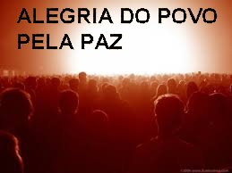
“Quando se completarem os mil anos, satanás será solto de sua prisão, e sairá para seduzir as nações dos quatro cantos da terra,“Gog e Magog” (Aqui, os dois nomes simbolizam as nações pagãs unidas contra a Igreja no Fim dos Tempos), reunindo-os para o combate; seu número é como a areia do mar... “Subiram sobre a superfície da Terra e cercaram o acampamento dos Santos e a Cidade Amada”; (Uma nova Terra Prometida, que Jerusalém é a capital, que resiste a esta última invasão. Todavia, a localização dela é um simbolismo que se refere a "toda Igreja"), “mas um fogo desceu do Céu e os devorou (os agressores). O Diabo que os seduzira foi então lançado no lago de fogo e de enxofre, onde já se achavam a Besta e o falso profeta. E serão atormentados dia e noite, pelos séculos dos séculos”.
O JULGAMENTO DAS NAÇÕES
(Agora sim, a humanidade que foi salva, está na Eternidade feliz)
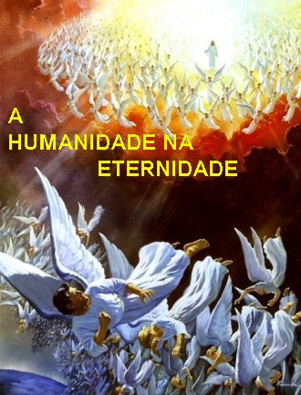
“O mar devolveu os mortos que nele jaziam, a Morte e o Hades entregaram os mortos que neles estavam, e cada um foi julgado conforme sua conduta. A Morte e o Hades foram então lançados no Lago de Fogo”. (Depois do Julgamento Final, a própria Morte será reduzida a impotência).“Esta é a “Segunda Morte” : o “Lago de Fogo”. E quem não se achava inscrito no “Livro da Vida” foi também lançado no “Lago de Fogo”.(Tudo está encerrado. A vitória ou a derrota final depende de cada um, do bem ou do mal que praticou, da fidelidade ou da infidelidade, da perseverança ou do desânimo livremente escolhidos). (Final do 20º Capítulo)
A JERUSALÉM FUTURA – A JERUSALÉM CELESTE
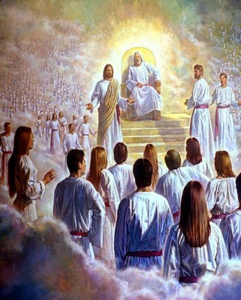
“Vi então um Céu Novo e uma Nova Terra (Toda a criação será renovada, libertada da servidão da corrupção, transformada pela glória de DEUS. O Céu, a Terra em que vivemos as nossas realidades não existe mais. Agora só nós e DEUS), pois o “Primeiro Céu” e a “Primeira Terra” se foram e o mar já não mais existe (O mar moradia do Dragão e símbolo do mal desaparecerá para sempre). Vi também descer do Céu, de junto de DEUS, a “Cidade Santa”, uma “Jerusalém Nova”, pronta como uma esposa que se enfeitou para seu marido. (São as novas núpcias de Jerusalém com seu DEUS, na alegria e no júbilo. Agora irá completar aquela aliança de DEUS com o seu povo). Nisto ouvi uma voz forte que do trono, dizia:
“Eis a tenda de DEUS com os homens. ELE habitará com eles; eles serão o seu povo, e ELE “DEUS-com-eles”, será o seu DEUS. ELE enxugará toda lágrima dos seus olhos, pois nunca mais haverá morte, nem luto, nem clamor, e nem dor haverá mais. Sim! As coisas antigas se foram!”
“O que está sentado no trono (DEUS) declarou então”: “Eis que EU faço novas todas às coisas.” “E continuou”: “Escreve, porque estas palavras são fiéis e verdadeiras”. “Disse-me ainda”: “Elas se realizaram! EU sou o Alfa e o Ômega, o Princípio e o Fim; e a quem tem sede EU darei gratuitamente da fonte de Água Viva (No Antigo Testamento a Água era o símbolo da Vida; no Novo Testamento é o símbolo do ESPÍRITO SANTO). O vencedor receberá esta herança, e EU serei seu DEUS e ele será Meu Filho”.
“Quanto aos preguiçosos, porém, e aos infiéis, aos corruptos, aos assassinos, aos impudicos, aos mágicos, aos idólatras e a todos os mentirosos, a sua porção se encontra no lago ardente de fogo e enxofre, que é a “Segunda Morte”. (A Morte Eterna, o fogo que devora se opõe a água, que representa a Vida; um e outro são simbólicos).
A JERUSALÉM MESSIÂNICA
(Tem esse nome porque as nações pagãs ainda
existem e podem se converter ao DEUS verdadeiro; mas na 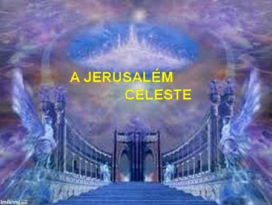
“Depois “um dos Sete Anjos das Sete Taças cheias com as Sete últimas pragas” "veio até mim e me disse”: “Vem! Vou te mostrar a Noiva, a Esposa do Cordeiro!” “Ele então me arrebatou em espírito sobre um grande e alto monte, e me mostrou a Cidade Santa, Jerusalém, que descia do Céu, de junto de DEUS (A Salvação messiânica e eterna é um Dom de DEUS), com a glória de DEUS”. “Seu esplendor é como o de uma pedra preciosíssima, uma pedra de jaspe cristalino. Ela está cercada por muralha grossa e alta, com doze portas. Sobre as portas há doze Anjos e nomes inscritos, os nomes das doze tribos dos filhos de Israel: três portas para o lado Oriente; três portas para o lado Norte; três portas para o lado Sul, e três portas para o Ocidente. A muralha da cidade tem doze alicerces, sobre os quais estão os nomes dos Doze Apóstolos do Cordeiro”.
“Aquele que comigo falava tinha como medida uma cana de ouro, para medir a cidade, seus portões e sua muralha. A cidade é quadrangular (Sinal de perfeição): seu comprimento é igual à largura. Mediu então a cidade com a cana: doze mil estádios [12 o número do novo Israel, multiplicado por 1.000 (multidão)]. O Comprimento, a largura e a altura são iguais. Mediu também a muralha: cento e quarenta e quatro côvados. – O Anjo media com medida humana. – O material de sua muralha é jaspe, e a cidade é de ouro puro, semelhante a um vidro límpido. Os alicerces da muralha da cidade são recamados com todo o tipo de pedras preciosas: (As pedrarias e suas cores deixam uma impressão de solidez e esplendor, reflexo da glória Divina) o primeiro alicerce é de jaspe, o segundo de safira, o terceiro de calcedônia, o quarto de esmeralda, o quinto de sardônica, o sexto de cornalina (variedade vermelha da Calcedônia), o sétimo de crisólito, o oitavo de berilo, o nono de topázio, o décimo de crisopraso (Variedade verde-clara da Calcedônia), o décimo primeiro de jacinto, o décimo segundo de ametista. As doze portas são doze pérolas: cada uma das portas era feita de uma só pérola. A praça da cidade é de ouro puro, como um vidro transparente. Não vi nenhum templo nela, (O Templo em que DEUS residia, no coração da Jerusalém terrestre, agora desapareceu. O lugar do novo culto espiritual é o corpo de CRISTO imolado e ressuscitado) pois o Seu Templo é o (próprio) SENHOR, o DEUS Todo-Poderoso, e o Cordeiro. A cidade não precisa do sol ou da lua para iluminar, pois a glória de DEUS a ilumina, e sua lâmpada é o Cordeiro”. (Uma visão verdadeiramente de deslumbrante beleza, impossível de ser traduzida por palavras).
“As nações caminharão à sua luz, e os reis da Terra trarão a ela a sua glória; suas portas nunca se fecharão (sempre) de dia – pois ali já não haverá noite (Do mesmo modo é o Ressuscitado, que de Jerusalém espalha sua luz sem sombra e sua santidade, sobre todas as Nações reunidas) – e lhe trarão a glória e o tesouro das nações. Nela jamais entrará algo de imundo, e nem os que praticam abominação e mentira. Entrarão somente os que estão inscritos no “Livro da Vida” do Cordeiro”. (Final do 21º Capítulo)
(O ANJO) “Mostrou-me depois um rio de “água da vida” brilhante como cristal, que saia do trono de DEUS e do Cordeiro (As águas vivas e vivificantes simbolizam o ESPÍRITO SANTO) no meio da praça. E de um lado e do outro do rio, há “árvores da Vida” que frutificam doze vezes, dando fruto a cada mês; e suas folhas servem para curar as nações”.
“Nunca mais haverá maldições. Nela estará o trono de DEUS e do Cordeiro, e seus servos LHES prestarão culto; verão SUA Face, e SEU Nome estarão sobre SUAS Frontes. Já não haverá mais noite: ninguém mais precisará da luz da lâmpada, nem da luz do sol, porque o SENHOR DEUS brilhará sobre eles, e eles reinarão pelos séculos dos séculos”. (O Primeiro Livro da Sagrada Escritura começa com a descrição do Paraíso Divino. O Último Livro, o Apocalipse, volta ao mesmo tema, deixando claro que a humanidade voltou ao Paraíso de onde nunca deveria ter saído).
“Disse-me então: (É uma espécie de diálogo entre o Anjo ou JESUS e o Vidente, comentando as visões contidas no livro e o uso que se deve fazer delas. A maioria das expressões já se acha disseminadas nos Capítulos. O final do texto é claramente atribuído a JESUS): “Estas palavras são fiéis e verdadeiras, pois o SENHOR, o DEUS dos espíritos dos profetas, enviou o Seu Anjo para mostrar aos Seus servos o que deve acontecer muito em breve. “Eis que EU venho em breve”! “Feliz aquele que observa as palavras da profecia deste livro. Eu, João, fui o ouvinte e a testemunha ocular destas coisas. Tendo-as ouvido e visto, prostrei-me para adorar o Anjo que me havia mostrado tais coisas”. “Ele, porém, me impediu”: “Não! Não o faças! Sou servo como tu e como teus irmãos, os profetas, e como aqueles que observam as palavras deste livro. È a DEUS que deves adorar!”
“E acrescentou”: “Não retenhas em segredo as palavras da profecia deste livro, pois o Tempo está próximo. Que o injusto cometa ainda a injustiça e o sujo continue a se sujar; que o justo pratique ainda a justiça e que o Santo continue a se santificar”. (O Plano Divino se cumprirá, seja qual for à conduta das pessoas).
(JESUS CRISTO confirma) “Eis que EU venho em breve, e trago comigo o salário para retribuir a cada pessoa conforme o seu trabalho. EU Sou o Alfa e o Ômega, o Primeiro e o Último, o Princípio e o Fim. Felizes os que lavam as suas vestes para ter poder sobre a “Árvore da Vida”, e para entrar na “Cidade” pelas portas (Pelas portas da Jerusalém Celeste). Ficarão de fora os cães, os mágicos, os impudicos, os homicidas, os idólatras e todos os que amam ou praticam a mentira.” (Final do 22º Capítulo)
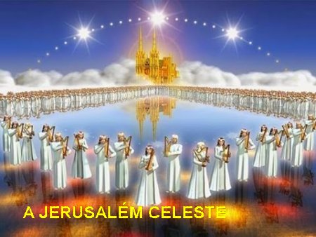
“O ESPÍRITO SANTO (O principio vital da Comunidade) e a Esposa (a Igreja esposa de CRISTO) dizem”:“Vem”! “Que aquele que ouve diga também: “Vem!” [É uma súplica que na Igreja Primitiva dirigiam a JESUS: o “Marana tha” (Palavras da língua aramaica que significam “O SENHOR vem”, ) que se repetia no decorrer das reuniões para exprimir a impaciente espera da “Parusia”]. “Que o sedento venha, e quem o deseja, receba gratuitamente, “Água da Vida”.
“A todo o que ouve as palavras da profecia deste livro, eu declaro: Se alguém lhes fizer algum acréscimo, DEUS lhe acrescentará as pragas descritas neste livro. E se alguém tirar algo das palavras do livro desta profecia, DEUS lhe retirará também a sua parte da “Árvore da Vida” e da “Cidade Santa”, que estão descritas neste livro!” (Os escritores antigos costumavam colocar no final das suas obras, um pedido a todos os copistas, no sentido de que fossem fiéis e não ousassem suprimir ou acrescentar algum fato ao texto original. É o pedido que o Apóstolo João, autor do Apocalipse, também faz neste parágrafo).
“Aquele que atesta estas coisas, diz: “Sim, venho muito em breve!” “Amém! Vem, SENHOR JESUS! (JESUS confirma que sua vinda é próxima. Seu Sim responde ao apelo da Igreja e dos crentes; e o Amém destes, exprime a fé e o seu alegre desejo de que ELE venha depressa)
“A Graça do SENHOR JESUS esteja com todos os santos! Amém”. (Com todos aqueles que são fiéis aos Mandamentos e ao Amor de DEUS).
(Final do Epílogo)